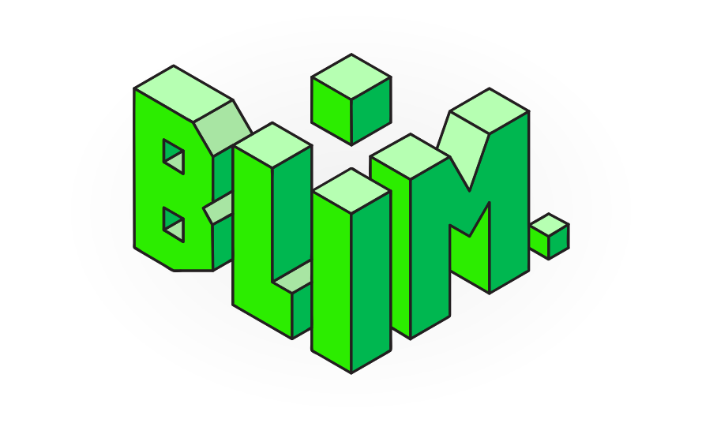
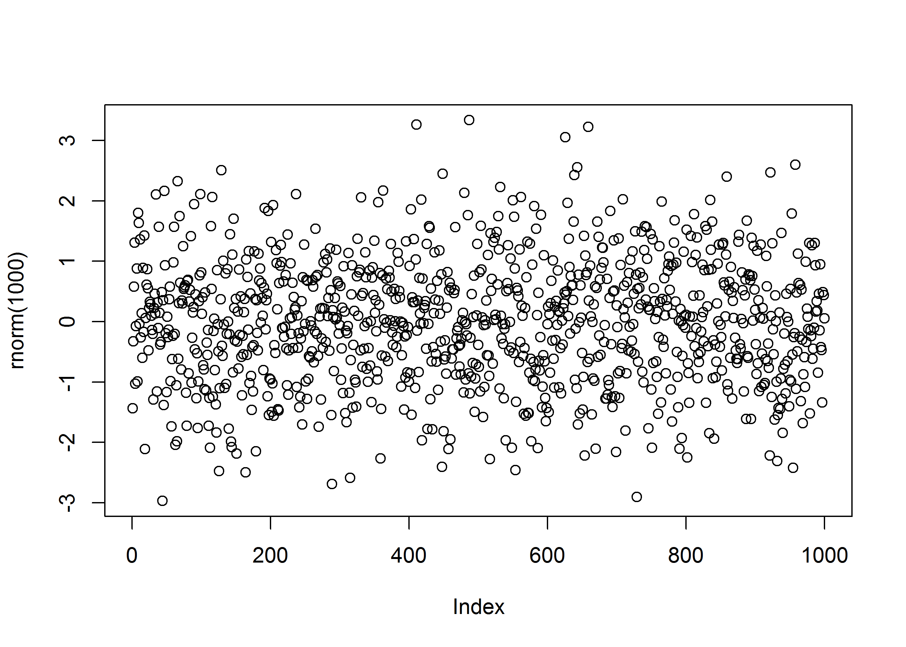

Here is the intro and where I got the inspiration. It leads to this svg in the img folder of the root directory:

Here is a png dev image, for if there are a lot of points in the image (svg becomes slow in this case).
hallo bruno
plot(rnorm(1000))
With few points, it’s better to use the standard svg.
barplot(c(2, 4, 6, 5, 1), col = "#00008B", border = "#00008B")